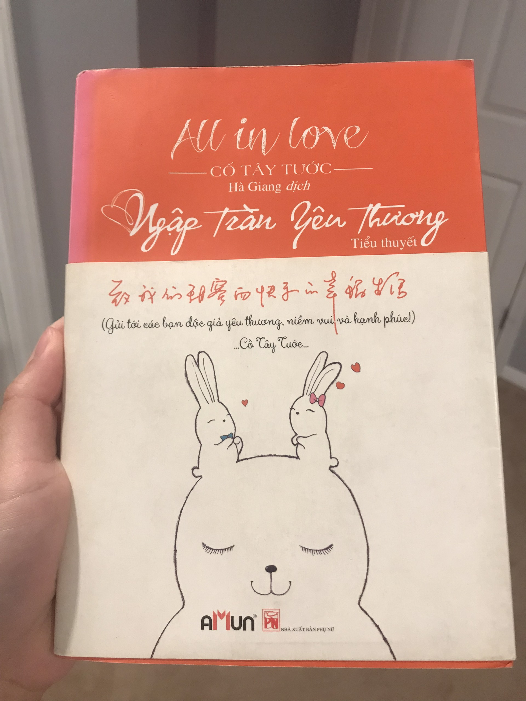
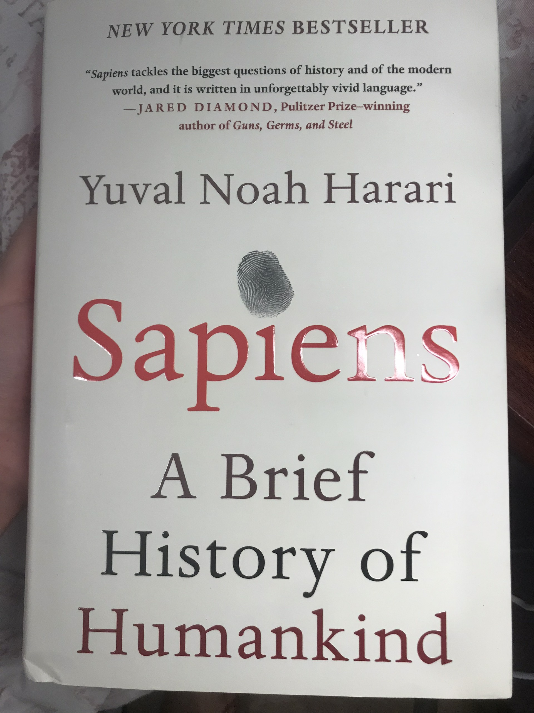

Reading
Reading is one of my favorite things to do when I have free time. I can expand my knowledge more when reading books and I really like the feeling of being immersed in knowledge. I read many types of books but I like reading about brief history of humankind and some books about human behaviour.

This is a romance novel that I really enjoyed. I first read it when I was in 9th grade and I read it many times. I love this book because it helps me feel happy in times of fatigue.

This is a book about the history of human development. It is one of the best books I have ever read.
This is a Vietnamese book. It is a book that motivates people in life as well as teaches people how to treat others. This book is written by a Vietnamese author, so the voice is very close. It has given me a lot of motivation in life.